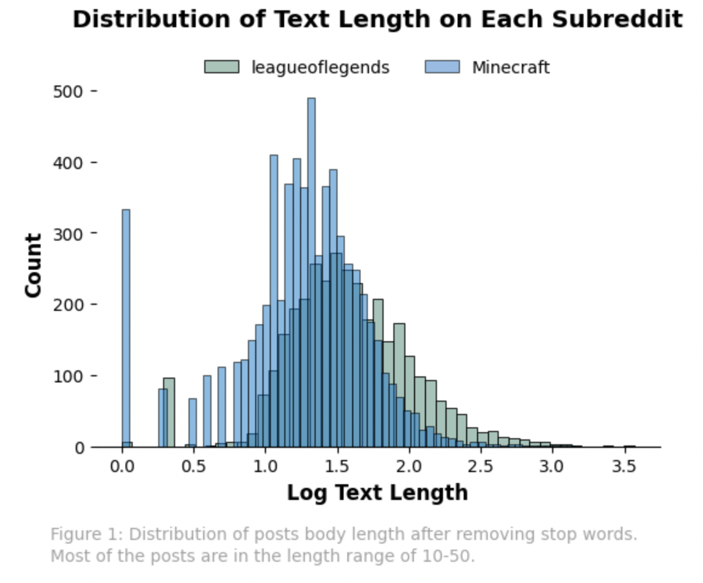
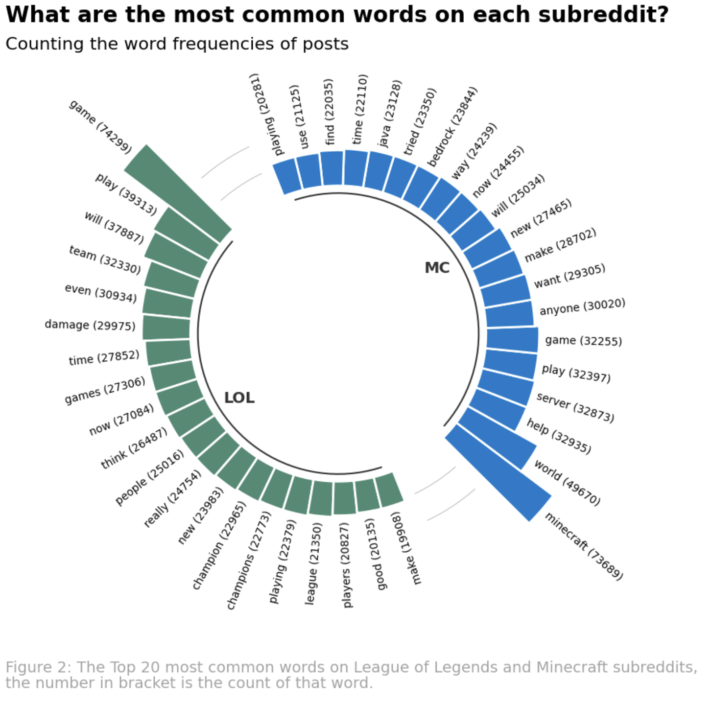

In the NLP section, our team first removes all meaningless words in the subreddit through a pipeline. Then, we find each subreddit's most popular topics/news by counting words. Next, our team performs a way(TF-IDF) to score words' relative importance or uniqueness and create a comparison graph between League of Legends and Minecraft. Minecraft seems to have more posts than LOL; most are simple and condensed. However, LOL has fewer posts, and a significant portion has more extended contexts. In addition, our team finds that topics related to esports are popular in the LOL subreddit; most of the posts in MC are about the game itself.
By analyzing the submission posts, we can get the sentiment situation based on the different esports teams. We will choose the four most popular esports teams and analyze what people discussed and the sentiment people have when discussing these teams. The results show that LPL and LCK have similar sentiment situations. LCS has less fear emotion, but the pattern is similar to others. However, LEC has much more sadness than others. It may relate to LEC's achievements in the past few years.
When diving into the content of the LOL subreddit, our team found that many posts do not discuss the game itself but are related to esports/peripherals, etc. We thus add a new business question related to esports, trying to explore users' attitudes towards different esports teams/divisions. Our team learned many backgrounds about Minecraft, enabling us to give more specific questions regarding the game itself. Hence our team proposed a question about the creatures in Minecraft and aimed to study Reddit users' behavior related to it.
League of Legends esports has many different divisions around the globe. People like to discuss the differences between these divisions. With the help of regex, our team extracts submissions that are related to 9 major divisions: CBLOL(Brazil), LCK(Korea), LCL(Russia), LCO(Oceania), LCS(North America), LEC(European), LJL(Japan), LLA(Latin America), LPL(China). The next part of the project is discovering how Reddit people react to these divisions.
| Name of Divisions | VCS | LPL | LCL | PCS | LCO | LLA | LCK | CBLOL | LCS | LEC | LJL | Worlds |
|---|---|---|---|---|---|---|---|---|---|---|---|---|
| Times of being mentioned | 151 | 1955 | 469 | 681 | 4779 | 20905 | 1749 | 128 | 3180 | 10852 | 125 | 8304 |
Minecraft is partially famous for its large creatures. Our team uses regex to find submissions talking about Minecraft creatures. We wish to explore which creature is the hottest on Reddit. Surprisingly, the Witch is the hottest creature, and Zombie is the next. Our team assumes Creeper is the hottest, as it is the most representative monster in Minecraft. It might be because Witch is more critical than Creeper in Minecraft.
| Name of Monsters | Enderman | Creeper | Drowned | Skeleton | Spider | Witch | Zombie | Slime |
|---|---|---|---|---|---|---|---|---|
| Times of being mentioned | 818 | 1851 | 497 | 1541 | 855 | 8073 | 2000 | 987 |
From the text length graph, we can see the text length difference between Minecraft and League of Legends. We use the log of the text length since some parts of the texts have very large lengths, and we want to keep these data, not considering them outliers. Minecrafts seem to have more posts than LOL, and most posts are less than 100 lengths. Although LOL has fewer posts than Minecraft, a larger portion of the posts have longer texts.
All submission contents are fed into the word tokenizer, and all stop words are removed. In the circular barplot, it can be seen that "game" is the most popular word in the League of Legends subreddit, followed by "play," "will," "team," "even," "damage," etc. In the Minecraft subreddit, the most common words are "Minecraft," "world," "help," "server," "play," and "game," which are different from League of Legends.There is one common thing in both LOL and Minecraft, the most common words and the second common words have a considerable gap. However, the top ten words are closer to each other when the rank is large.
Term Frequency–Inverse Document Frequency (TF-IDF) is a measure that can be used to capture the essential words in a document based on how frequently they appear across multiple documents. The higher the TF-IDF score, the more important or relevant the word is. The tables below show each subreddit's top 10 critical words according to TF-IDF. The words with the highest TF-IDF scores in the League of Legends subreddit are "ulti," "schalke", "vcs", "zoner," "flandre," etc. Armut and Flandre are famous League of Legends esports players. IMTA, Hanwha, and Schalke are esports teams, and VCS represents the Vietnam Championship Series. In the list of 10 words having the highest TF-IDF scores, six are related to esports.
The scores of these ten words are pretty close. In the Minecraft subreddit, the word "multimc" has the highest score, followed by "workstations," "gamerule," "puth," "thenameseeker," etc. These words are related to the game content itself.
|
|
The sentiment made by the sparkNLP framework. We choose the top 4 esports teams from league of legends' subreddits: LPL, LCK, LEC, and LCS. By analysis, their submission on Reddit counts the total amount of different sentiments, which include: fear, joy, sadness, and surprise. The result shows that when users talk about the esports team, LPL and LCK has very similar sentiment situation. LCS has less fear emotion, but the pattern is similar to others. However, LEC has much more sadness than others. It may relate to LEC's achievements in the past few years.
We use the sentiment part to solve the "positive effect in posts" question. We did the analysis on submission instead of comments in the NLP part. The submission subreddits have more columns and are more important than the comments. The central post part can decide the topics, so it is necessary to analyze the submission part to know the posts' positive/negative impact.
Figure3: The percentage of people's feelings in different esports in the league of legends